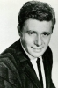

Country:United States, 102 minutes
Spoken languages:Spanish, English
Genres:Action, Crime, Thriller
Director(s):Don Siegel
Writer(s):Harry Julian Fink, Rita M. Fink, Dean Riesner
Video Codec:Unknown
Number: 2367


Certification:R
Storyline:
When a madman dubbed 'Scorpio' terrorizes San Francisco, hard-nosed cop, Harry Callahan – famous for his take-no-prisoners approach to law enforcement – is tasked with hunting down the psychopath. Harry eventually collars Scorpio in the process of rescuing a kidnap victim, only to see him walk on technicalities. Now, the maverick detective is determined to nail the maniac himself.
Cast: 


Medium: Original DVD,
Loaned: No
Aspect ratio: Unknown